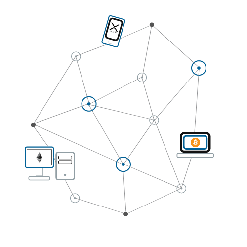

Afin de sécuriser ses crypto-actifs, il vous faudra créer un portefeuille de crypto-monnaies. Un portefeuille est un logiciel qui va vous permettre d’envoyer, recevoir, contrôler et sécuriser votre crypto-monnaie. Pour cela le portefeuille génère une suite aléatoire d’un certain nombre de mots appelés “seed” qui va vous permettre de restaurer vos fonds dans n’importe quel portefeuille. Cette seed est donc une sorte de titre de propriété. Le portefeuille sert quant à lui à mettre à disposition une interface permettant à l’utilisateur d'interagir avec les fonds liés à la seed. Le portefeuille génère à partir de la seed des clés privées qui permettent de contrôler vos crypto-actifs et donc de pouvoir les dépenser. Sans ces clés, cela est impossible. Depuis vos clés privées, des adresses de réception sont dérivées. Ces adresses marchent comme un RIB, on s’en sert pour recevoir des crypto-actifs. Attention! Il existe plusieurs types d’adresses selon le type de crypto-actif, une adresse de réception bitcoin ne peut donc pas recevoir d’autre crypto-actif.

Votre portefeuille doit avant tout répondre à vos besoins. Les portefeuilles physiques seront plus à même de sécuriser vos fonds quand d’autres, sous forme d’application de smartphone pourront vous servir à faire des paiement aux quotidiens. Le portefeuille physique ferait office de banque et l’application de porte-monnaie de la vie quotidienne.
Il existe plusieurs critères pour choisir sa plateforme d’échange.
La sécurité :
Si votre échange n’est pas sécurisé, vos fonds pourraient être volés.
La technologie :
Privilégiez les sites commençant par HTTPS.
Pour la connexion au site, mieux vaut une authentification à deux facteurs.
Le dépôt des clients devrait se faire hors-ligne via une solution non connectée à internet pour une meilleure protection des données (cold storage).
Les aspects légaux :
Il est recommandé d’utiliser une plateforme d’échange qui se trouve dans votre pays, rendant le processus de changement réglementaire plus facile.
La transparence :
Les échanges transparents publient leur adresse de stockage hors ligne ou permettent de vérifier la disponibilité des fonds.
La liquidité :
Plus le volume des opérations est grand, plus l’échange aura une grande liquidité. Ça rendra les transactions plus rapides, plus faciles, et sans avoir à gérer de nombreux changements majeurs de prix. Il faut aussi vérifier si un échange offre un système de « locked in pricing », ce qui vous garantit le prix que vous indiquez au moment de votre transaction même si elle ne passe pas immédiatement.
Les frais:
Comparer les frais d’échanges, ils sont en général inférieurs à 5% du prix de la transaction
L’expérience utilisateur: